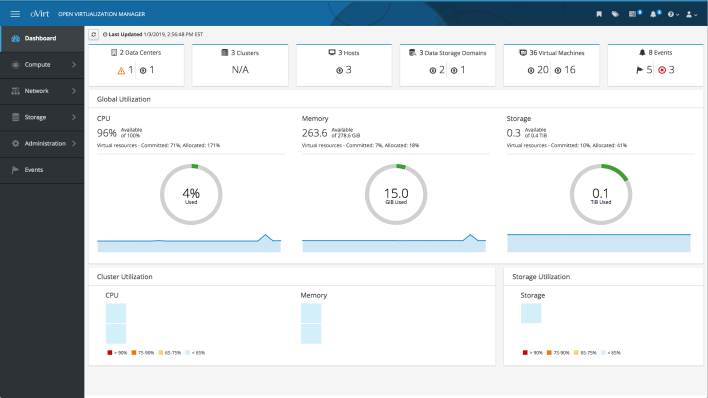
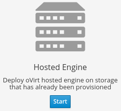

Download oVirt

oVirt 4.3.4 is intended for production use and is available for the following platforms:
- Red Hat Enterprise Linux 7.6 or later
- CentOS Linux 7.6 or later
- Scientific Linux 7.6 or later
- oVirt Node (based on CentOS)
See the Release Notes for oVirt 4.3.4.
Install oVirt with Cockpit
oVirt is installed using a graphical installer in Cockpit.
oVirt Engine and a Host are installed together with the Engine running as a Virtual Machine on that Host. Once you install a second Host, the Engine Virtual Machine will be highly available. See the Self-Hosted Engine Guide for full details.
oVirt supports two types of Hosts:
- oVirt Node, a minimal hypervisor operating system based on CentOS
- Enterprise Linux (such as CentOS or RHEL)
Depending on your environment requirements, you may want to use only oVirt Nodes, only EL Hosts, or both.
Download oVirt Node
-
Download the oVirt Node Installation ISO (current stable is oVirt Node 4.3 - Stable Release - Installation ISO)
-
Write the oVirt Node Installation ISO disk image to a USB, CD, or DVD.
-
Boot your physical machine from that media and install the oVirt Node minimal operating system.
Or Setup a Host
Instead of or in addition to oVirt Node, you can use a standard Enterprise Linux installation as a Host.
-
Install one of the supported operating systems (CentOS, RHEL, or Scientific Linux) on your Host and update it:
sudo yum update -y # reboot if the kernel was updated -
Add the official oVirt repository:
sudo yum install https://resources.ovirt.org/pub/yum-repo/ovirt-release43.rpm
Install oVirt using the Cockpit wizard
-
Enable the Base, Optional, and Extra repositories (Red Hat Enterprise Linux only):
# RHEL only -- they are enabled by default on CentOS and oVirt Node sudo subscription-manager repos --enable="rhel-7-server-rpms" sudo subscription-manager repos --enable="rhel-7-server-optional-rpms" sudo subscription-manager repos --enable="rhel-7-server-extras-rpms" -
Install Cockpit and the cockpit-ovirt-dashboard plugin:
sudo yum install cockpit cockpit-ovirt-dashboard -y -
Enable Cockpit:
sudo systemctl enable --now cockpit.socket -
Open the firewall:
sudo firewall-cmd --add-service=cockpit sudo firewall-cmd --add-service=cockpit --permanent -
Log in to Cockpit as root at https://[Host IP or FQDN]:9090 and click Virtualization → Hosted Engine.
-
Click Start under the Hosted Engine option.

-
Complete the setup wizard. As part of the setup, you will enter the Hosted Engine's name.
-
As part of the setup wizard, you will need to provide the location of your storage. oVirt requires a central shared storage system for Virtual Machine disk images, ISO files, and snapshots.
-
Once the installation completes, oVirt's web UI management interface will start. Browse to https://[Hosted Engine's name]/ to begin using oVirt!
See Browsers and Mobile Clients for supported browsers and mobile client information.
Setup Additional Hosts
Once the Engine is installed, you must install at least one additional Host for advanced features like migration and high-availability.
Once you have installed additional oVirt Nodes or EL Hosts, use the oVirt Administration Portal to add them to the Engine. Navigate to Compute → Hosts → New and enter the Host details. See Adding a Host to the oVirt Engine for detailed instructions.
Install Virtual Machines
Once oVirt Engine is installed and you have added Hosts and configured storage, you can now install Virtual Machines! See the Virtual Machine Management Guide for complete instructions.
For best Virtual Machine performance and accurate dashboard statistics, be sure to install the oVirt Guest Agent and Drivers for Linux [for Windows] in each Virtual Machine.
The following virtual machine guest operating systems are supported:
| Operating System | Architecture | SPICE support [1] |
|---|---|---|
| Red Hat Enterprise Linux 3 - 6 | 32-bit, 64-bit | Yes |
| Red Hat Enterprise Linux 7+ | 64-bit | Yes |
| SUSE Linux Enterprise Server 10+ [2] | 32-bit, 64-bit | No |
| Ubuntu 12.04 (Precise Pangolin LTS)+ [3] | 32-bit, 64-bit | Yes |
| Windows XP Service Pack 3 and newer | 32-bit | Yes |
| Windows 7 | 32-bit, 64-bit | Yes |
| Windows 8 | 32-bit, 64-bit | No |
| Windows 10 | 64-bit | Yes |
| Windows Server 2003 Service Pack 2 and newer | 32-bit, 64-bit | Yes |
| Windows Server 2008 | 32-bit, 64-bit | Yes |
| Windows Server 2008 R2 | 64-bit | Yes |
| Windows Server 2012 R2 | 64-bit | No |
| Windows Server 2016 | 64-bit | No |
[1] SPICE drivers (QXL) are not supplied by Red Hat. Distribution's vendor may provide SPICE drivers.
[2] select Other Linux for the guest type in the user interface
[3] not tested recently (?)
Consoles
The console is a graphical window that allows you to view and interact with the screen of a Virtual Machine. In oVirt, you can use a web-based console viewer or a desktop application (we recommend Remote Viewer). For Windows virtual machines, Remote Desktop Protocol is also available. See Installing Console Components, VNC Console Options, and and Browser Support and Mobile Clients for more information.
RPM Repositories and GPG keys
RPM repository for oVirt 4.3 - Latest stable release
See RPMs and GPG for older releases, nightlies, mirrors, and GPG keys.